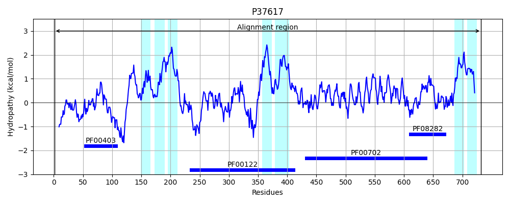
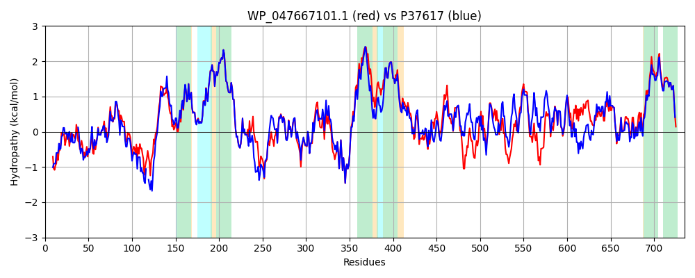

Hit Accession: P37617
Hit TCID: 3.A.3.6.2
Hit Description: gnl|BL_ORD_ID|10111 gnl|TC-DB|P37617|3.A.3.6.2 LEAD, CADMIUM, ZINC AND MERCURY TRANSPORTING ATPASE (EC 3.6.3.3) (EC 3.6.3.5) - Escherichia coli.
Mach Len: 735
e:0.000000
Query TMS Count : 6
Hit TMS Count: 7
TMS-Overlap Score: 4.950000
Predicted Substrates:CHEBI:3290;cadmium(2+), CHEBI:49807;lead(2+), CHEBI:23337;cobalt(2+), CHEBI:23380;copper(2+), CHEBI:5714;mercury(2+), CHEBI:25517;nickel(2+), CHEBI:10113;zinc(2+)
BLAST Alignment:
Score: 2773 , Bit scores: 1072 bits, E-value: 0.0e+00, Alignment length: 735, Percentage identity: 77
Query: 1 MSTPDAQDKKVPQFSSFTMRPATAPAESCCTDHACATESAPAAEALDDARYSWQVDGMDCAACARKVETAVRQVPGVSQVQVLFATEKLLVNAEGDIRAQVESAVRQAGYTLRDADAPAAEKTRGSLLRDNLPLLTLFIMMALSWGLEQANHPAGQLAFIATTLVGLWPVARQALRLIKSGSWFAIETLMSVAAIGALFIGATAEAAMVLLLFLIGERLEGWAASRARQGVSALMALKPDTAIRLRNGVRETVAQRDLRPGDVIEVAAGGRLPADGQLLSPFASFDESALTGESVPVERQAGERVAAGATSVDRLVQLTVISEPGDSAIDRILKLIEEAEERRAPIERFIDRFSRIYTPAIMVVALLVAIAPPLFFASAWLPWIYKGLTLLLIGCPCALVISTPAAITSGLAVAARRGALIKGGAALEQLGQVRQVAFDKTGTLTVGQPQVTSVIATAEFDDNALLALAAAVEQGSSHPLAQAIVREAQRRQLSIPLASGQRALAGSGIEAEVNGSRILICAASKAAPAEHEAQIQQLESAGQTVVLVMRGETLLGILALRDTLRDDARQAVDALHQLGVQGVILTGDNPRAAAAIASELGLEFRAGLLPADKVKAVMALNADAPLAMVGDGINDAPAMKAATIGIAMGSGTDVALETADAALTHNRLTGLAQMISLARATHANIRQNIAIALGLKGIFLVTTLLGLTGLWLAVLADTGATVLVTANALRLLRKK 735
MSTPD KK PQF++F A CC D AC++ + +E + RYSW+V GMDCAACARKVE AVRQ+ GV+QVQVLFATEKL+V+A+ DIRAQVESA+++AGY+LRD A AE+ + S L++NLPL+TL +MMA+SWGLEQ NHP GQLAFIATTLVGL+P+ARQALRLIKSGS+FAIETLMSVAAIGALFIGATAEAAMVLLLFLIGERLEGWAASRARQGVSALMALKP+TA RLR G RE VA LRPGDVIEVAAGGRLPADG+LLSPFASFDESALTGES+PVER G++V AGATSVDRLV L V+SEPG SAIDRILKLIEEAEERRAPIERFIDRFSRIYTPAIM VALLV + PPL FA++W WIYKGLTLLLIGCPCALVISTPAAITSGLA AARRGALIKGGAALEQLG+V QVAFDKTGTLTVG+P+VT++ ++ LL LAAAVEQG++HPLAQAIVREAQ +L+IP A QRAL GSGIEA+VNG R+LICAA K I +LESAGQTVVLV+R + +LG++AL+DTLR DA A+ L+ LGV+GVILTGDNPRAAAAIA ELGLEF+AGLLP DKVKAV LN APLAMVGDGINDAPAMKAA IGIAMGSGTDVALETADAALTHN L GL QMI LARATHANIRQNI IALGLKGIFLVTTLLG+TGLWLAVLADTGATVLVTANALRLLR++
Sbjct: 1 MSTPDNHGKKAPQFAAFKPLTTVQNANDCCCDGACSS-TPTLSENVSGTRYSWKVSGMDCAACARKVENAVRQLAGVNQVQVLFATEKLVVDADNDIRAQVESALQKAGYSLRDEQA--AEEPQASRLKENLPLITLIVMMAISWGLEQFNHPFGQLAFIATTLVGLYPIARQALRLIKSGSYFAIETLMSVAAIGALFIGATAEAAMVLLLFLIGERLEGWAASRARQGVSALMALKPETATRLRKGEREEVAINSLRPGDVIEVAAGGRLPADGKLLSPFASFDESALTGESIPVERATGDKVPAGATSVDRLVTLEVLSEPGASAIDRILKLIEEAEERRAPIERFIDRFSRIYTPAIMAVALLVTLVPPLLFAASWQEWIYKGLTLLLIGCPCALVISTPAAITSGLAAAARRGALIKGGAALEQLGRVTQVAFDKTGTLTVGKPRVTAIHPATGISESELLTLAAAVEQGATHPLAQAIVREAQVAELAIPTAESQRALVGSGIEAQVNGERVLICAAGKHPADAFTGLINELESAGQTVVLVVRNDDVLGVIALQDTLRADAATAISELNALGVKGVILTGDNPRAAAAIAGELGLEFKAGLLPEDKVKAVTELNQHAPLAMVGDGINDAPAMKAAAIGIAMGSGTDVALETADAALTHNHLRGLVQMIELARATHANIRQNITIALGLKGIFLVTTLLGMTGLWLAVLADTGATVLVTANALRLLRRR 732 | Protein Hydropathy Plots: |
|---|
 |  |
Pairwise Alignment-Hydropathy Plot:
|
|---|
|  |